☕ EDA Café y Cacao — Cooperativas frente al EUDR
Exploración del universo de 185 organizaciones PAC especializadas en café y cacao.
Filtro: archivo 1 (directorio PAC) + archivo 3 (perfil San Martín).
☕ Café: 86 orgs
🍫 Cacao: 99 orgs
📊 A1: directorio PAC
📋 A3: perfil San Martín
🌿 13 departamentos
🗓️ Sep 2026
Panorámica General
Universo: 185 organizaciones PAC de café y cacao en 13 departamentos. A3 aporta el perfil detallado de 25 cooperativas cafeteras en San Martín.
Organizaciones PAC
185
86 café + 99 cacao · A1
Cooperativas San Martín
25
Perfil detallado · A3
Departamentos
13
Cobertura nacional
Productores (San Martín)
7,580
5,590 H + 1,990 M
Certificación Orgánica
96%
24/25 cooperativas
Avance EUDR
0.79 / 1
17 orgs con dato
Exportaciones FOB 2025
$33.9M
13 exportadoras · San Martín
Superficie
21,235 ha
En San Martín · A3
Contexto EUDR: El Reglamento de Deforestación de la UE (2023/1115) exige que operators importers demuestren que productos de café y cacao no provienen de tierra deforestada post-dic-2020. Las 25 cooperativas de San Martín tienen un avance promedio de 0.79/1.0 — posicionadas favorablemente, pero 7 organizaciones aún no registran avance.
☕ Archivo 1 — Café (86 organizaciones)
Deptos con café
13
Top: Amazonas, Junín, Cusco
Cooperativas
52
60% del universo café
Asociaciones
31
36% del universo café
RUCs válidos
83/86
96.5% de cobertura
Departamentos con organizaciones de café
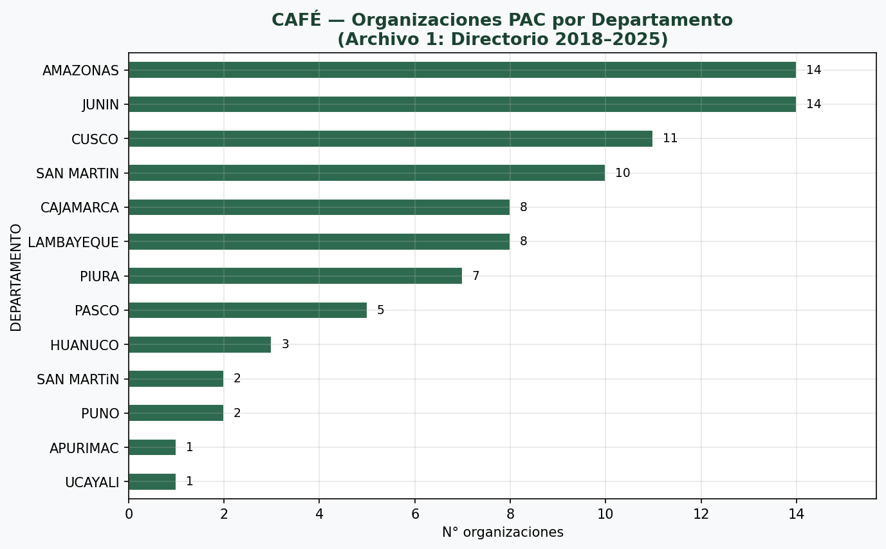
Amazonas y Junín lideran con 14 organizaciones cada uno. San Martín aparece 2 veces con grafías distintas: "SAN MARTIN" y "SAN MARTiN" — consolidar.
Principales provincias productoras de café
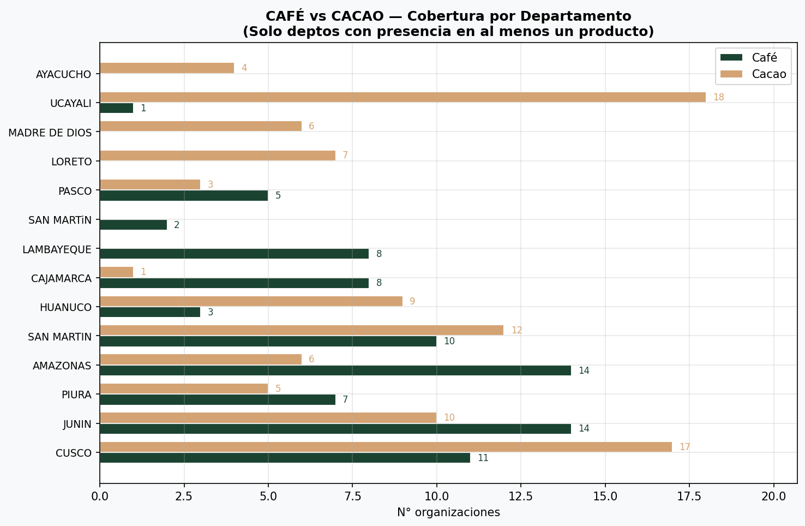
La Convención (Cusco) y Satipo (Junín) son los polos cafeteros más densos. Valle del Río Apurímac, Ene y Mantaro (VRAEM) visible en Satipo y Chanchamayo.
Tipos de organización — Café
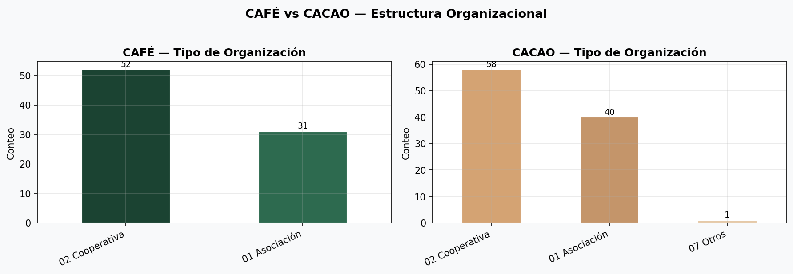
Cooperativas son el doble de asociaciones en café. Modelo organizacional maduro, favorable para trazabilidad EUDR.
Validación de RUC — Café
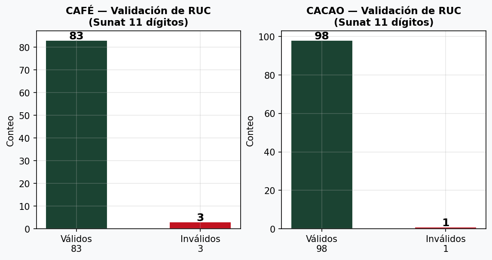
3 RUCs inválidos requieren verificación. Sin RUC válido no hay acceso a Sunat para trazabilidad.
Detalle: Amazonas y Junín lideran con 14 organizaciones cada uno. Cusco (11) y San Martín (10+2 con grafía diferente) confirman la Selva Alta como zona cafetera prioritaria.
🍫 Archivo 1 — Cacao (99 organizaciones)
Deptos con cacao
13
Top: Ucayali, Cusco, San Martín
Cooperativas
58
59% del universo cacao
RUCs válidos
98/99
99% de cobertura
Deptos sin café
6
Ucayali, Loreto, Madre de Dios…
Departamentos con organizaciones de cacao
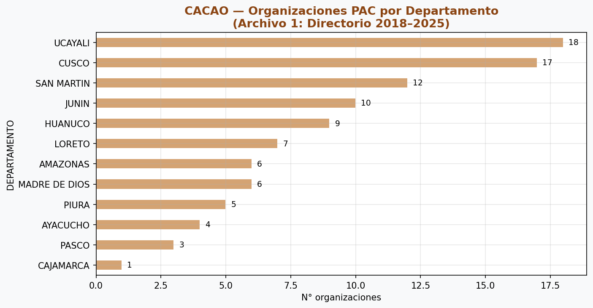
Ucayali es el primer departamento cacaotero (18 orgs), seguido de Cusco (17) y San Martín (12). La Amazonía central y sur concentra el cacao.
Mapa de calor — Deptos × Producto Café/Cacao
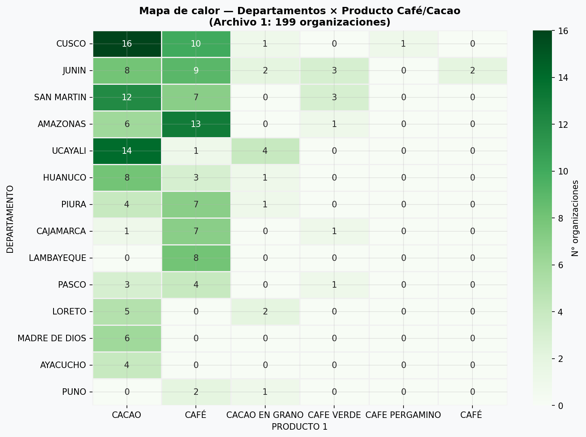
Cusco y Junín son los únicos departamentos con presencia en ambos productos. La mayoría de deptos se especializa en uno u otro.
⚖️ Comparativa Café vs Cacao
| Métrica | ☕ Café | 🍫 Cacao | Interpretación |
|---|
| Organizaciones PAC | 86 | 99 | Cacao tiene 15% más cobertura |
| Departamentos | 13 | 13 | Misma cobertura geográfica |
| Cooperativas | 52 (60%) | 58 (59%) | Misma proporción — modelo cooperativo domina |
| Asociaciones | 31 (36%) | 40 (40%) | Cacao ligeramente más asociativo |
| RUCs válidos | 83/86 (96.5%) | 98/99 (99%) | Cacao mejor cobertura Sunat |
| Depto líder | Amazonas + Junín (14 c/u) | Ucayali (18) | Diferentes ecosistemas dominantes |
| San Martín | 12 orgs | 12 orgs | Paridad en el dept. clave para EUDR |
| Cusco | 11 orgs | 17 orgs | Cusco más cacaotero que cafeteros |
📋 Archivo 3 — Perfil San Martín (café, 25 cooperativas)
Socios varones
5,590
N=25 · Media=224 · Máx=607
Socias mujeres
1,990
N=25 · Media=80 · Máx=254
Productores total
7,580
73.7% varones, 26.3% mujeres
Hectáreas
21,235
N=25 · Media=849 · Máx=4,031 ha
Volumen cosecha 2026
136,505 qq
Solo 10 orgs con dato
FOB 2025
$33.9M
13 exportadoras · Máx=$10.7M
Certificación Orgánica
96%
24/25 · Activo EUDR clave
Fair Trade
96%
24/25 · Mercado UE
Socios por provincia — San Martín
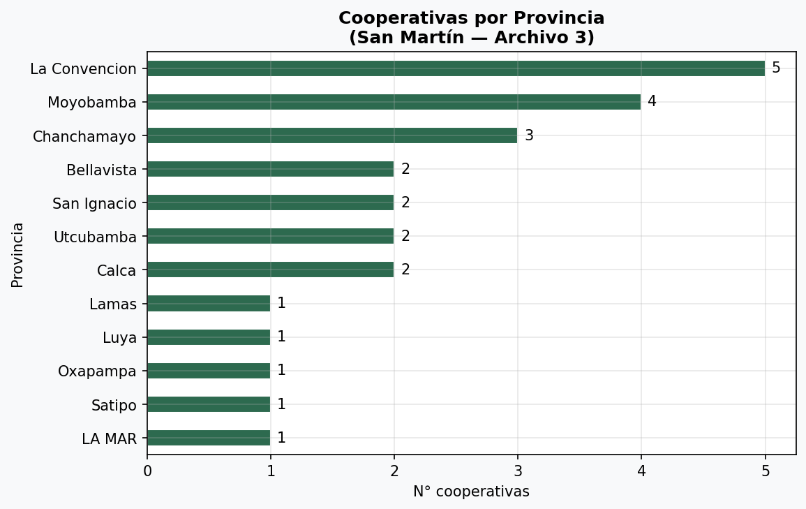
La Convención lidera con 5 cooperativas. Bellavista, Moyobamba y Chanchamayo son los otros polos.
Hectáreas vs Volumen — San Martín
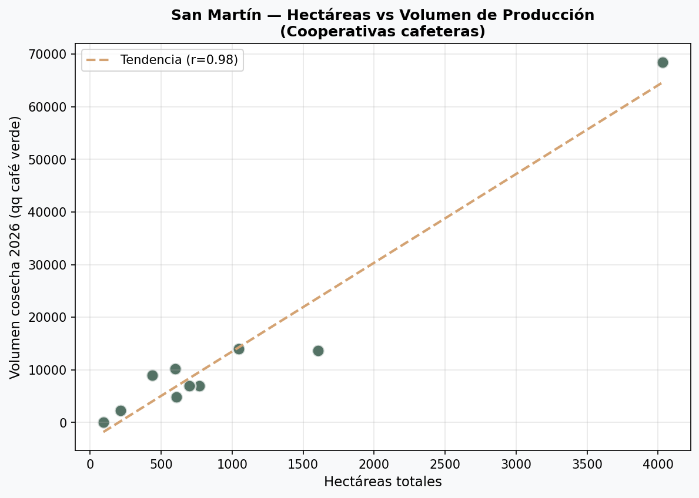
Eficiencia media: la regresión lineal muestra correlación positiva. Orgss. outlier a la derecha: alta superficie con producción moderada (posible subutilización o abandono).
Distribución y composición de género
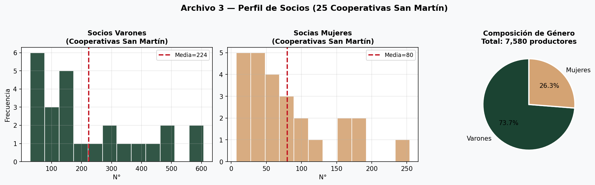
Sesgo hacia organizaciones pequeñas-medianas. Brecha de género: 73.7% varones. Oportunidad de inclusión con programas de extensión específicos.
Certificaciones vigentes
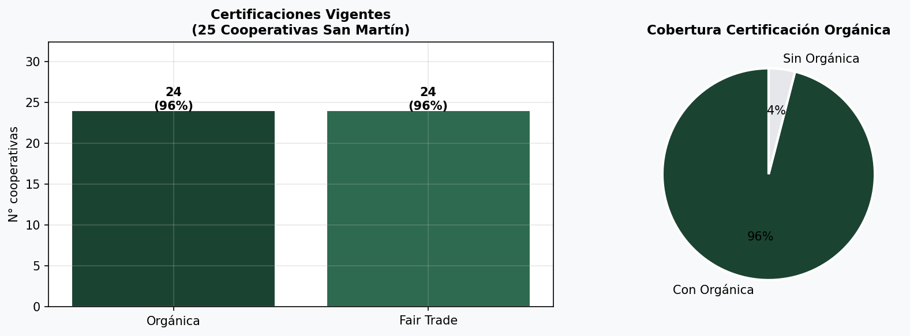
Orgânica y Fair Trade están prácticamente universalizadas (96%). Esto es un activo UEDR excepcional: la certificación de terceros ya cubre deforestación y prácticas.
Exportaciones FOB 2025 por cooperativa (USD)
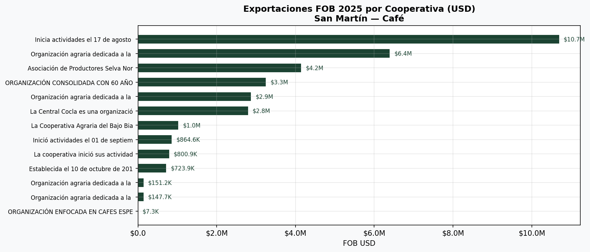
Concentración extrema: Valle Grande sola = $10.7M (31.5% del total). 9 cooperativas concentran ~$29M. Mediana = $1M, media = $2.6M — asimetría fuerte.
Mercados de destino de exportación
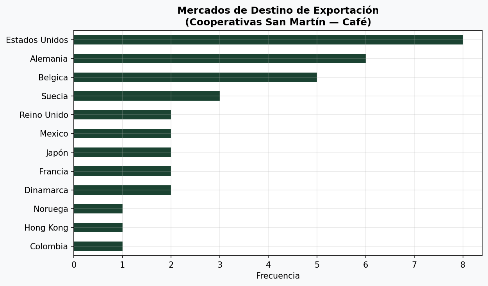
EE.UU. domina (8 cooperativas). Alemania y Bélgica en segundo nivel. Nota: duplicación de nombres ("Alemania", "ALEMANIA", "Alemania y Belgica") requiere limpieza en ETL.
Posición comercial: 13 de 25 cooperativas exportan (52%). El FOB total de $33.9M se concentra en 5-6 organizaciones. Las 12 cooperativas restantes venden al mercado nacional o están en fase de desarrollo exportador.
🌿 EUDR — Nivel de Preparación
Score EUDR promedio
0.79 / 1
17 orgs con registro
Sin avance EUDR
7
28% de las 25 coop.
Avanzado (0.75–1.0)
14
De las 17 con dato
Registro sanitario
20
20/25 con número válido
Distribución del score EUDR — Cooperativas San Martín
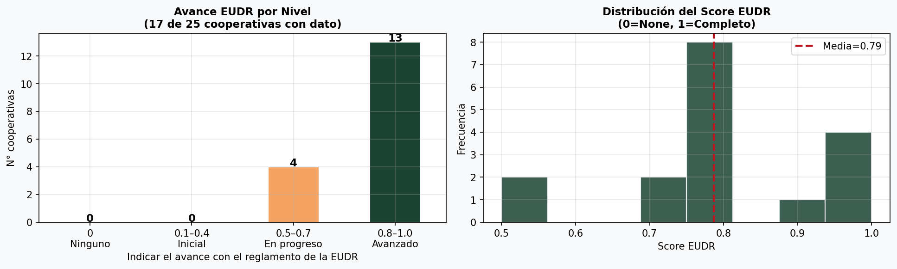
La mayoría de orgs. con dato están en fase avanzada. 7 organizaciones (28%) no registran avance — riesgo crítico. Se requiere aplicación del Instrumento 2 para cerrar la brecha.
| Nivel EUDR | Score | Cooperativas | Implicancia operativa |
|---|
| 🔴 Sin avance | 0 | 7 | No han iniciado mapeo de áreas, georreferenciación ni empadronamiento. Prioridad 1. |
| 🟠 Inicial | 0.1–0.4 | 0 | No detectado en este universo. |
| 🟡 En progreso | 0.5–0.7 | 4 | Mapeo iniciado pero incompleto. Requieren acompañamiento para cerrar georreferenciación. |
| 🟢 Avanzado | 0.8–1.0 | 13 | Cumplimiento cercano. Georreferenciación completa y empadronamiento operativo. |
⚠️ Flag crítico: 7 cooperativas (28%) no registran avance EUDR. Sin score ≥ 0.5, no pueden emitir la declaración de diligencia debida exigida por el Reglamento EU. Estas organizaciones enfrentan riesgo de no acceso al mercado UE a partir de finales de 2025.
🔍 Calidad de Datos
| Fuente | Métrica | Valor | Severidad | Acción |
|---|
| A1 Café | Deptos con doble grafía | "SAN MARTIN" y "SAN MARTiN" | 🟠 Media | Normalizar strings a uppercase |
| A1 | RUCs inválidos café | 3/86 (3.5%) | 🟠 Media | Verificar con Sunat |
| A1 | RUCs inválidos cacao | 1/99 (1%) | 🟡 Baja | Verificar con Sunat |
| A3 | RUC no es el de Sunat | 0/25 válidos (0%) | 🔴 Alta | Campo incorrecto — revisar columna |
| A3 | Volumen producción | Solo 10/25 orgs (40%) | 🔴 Alta | Completar en campo para 15 orgs |
| A3 | Mercados duplicados | "Alemania" vs "ALEMANIA" | 🟡 Baja | Limpiar strings: strip + lower |
| A3 | Status SUNAT | 1 suspensión temporal | 🔴 Alta | Evaluar impacto operativo EUDR |
| A3 | Sin avance EUDR | 7/25 (28%) | 🔴 Alta | Aplicar Instrumento 2 urgentemente |
| A3 | Rainforest Alliance | No detectado como campo | 🟠 Media | Extraer con regex del texto libre |
| A3 | Calidad café | Texto libre, no estructurado | 🟡 Baja | Normalizar a Grado 1/2/3/Especial |
🚩 Flags Prioritarios para Acción
🔴 Crítico — 7 organizaciones sin avance EUDR
No pueden exportar a la UE post-dic-2025. Requiere aplicación inmediata del Instrumento 2 de diagnóstico EUDR.
🔴 Crítico — 15 organizaciones sin volumen declarado
Sin volumen no hay trazabilidad de lote. Imprescindible para la declaración EUDR.
🔴 Crítico — 1 organización en suspensión SUNAT
Estatus "no habido" bloquea facturación y cadena de custodia. Riesgo operativo directo.
🟠 Urgente — 20% de orgánicos no Rainforest
Rainforest Alliance no está como campo estructurado. 24 orgs reportan Fair Trade pero no RA. Verificar en texto libre.
🟠 Oportunidad — Brecha de género 73/27
Solo 26% de socias. Cooperativas con mayor participación femenina tienen mejor acceso a mercados de especialidad. Oportunidad de diferenciación EUDR.
🟡 слеш — Concentración exportadora extrema
5 cooperativas generan ~85% del FOB. Las 8 restantes con potencial exportador requieren fortalecimiento comercial.
🏔️ Perfil de Altitud y Calidad — San Martín
Rango de altitud
750–2,200 m
msnm reportado por las 25 coop.
Café de altura (>1,200m)
~22
De las 25 con dato
Grado 1
Predominante
≤15 defectos — specialty
Café Especial
6+ orgs
Puntajes 82–88 SCA
Perfil de calidad: Todas las cooperativas reportan altitudes de 750–2,200 msnm. El rango de 1,200–2,200m define café de altura con perfil de taza diferenciado. Varias organizaciones destacan microlotes con puntajes 82–88 puntos SCA (specialty coffee) — atributo premium para el mercado UE bajo EUDR.
EDA Café y Cacao — EUDRPERU · Generado por Mavis · {datetime.now().strftime('%Y-%m-%d')}